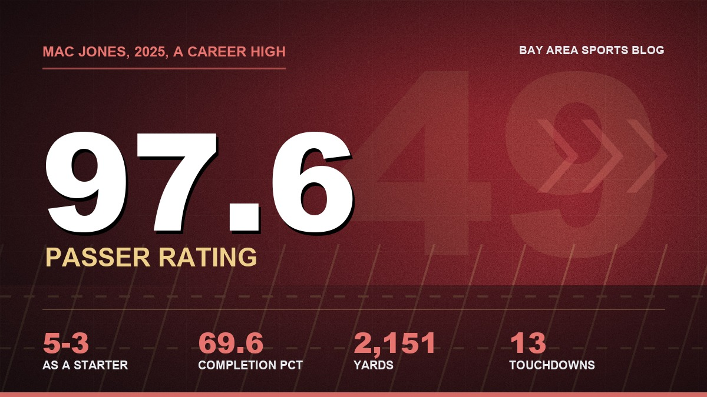
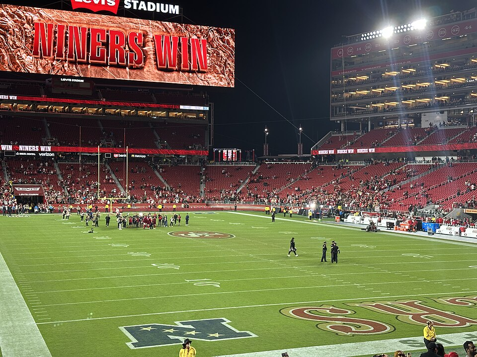

Mac Jones Trade Rumors: Hang Up the Phone, John
Every year somebody wants to trade the backup quarterback right up until the starter limps off. We've done this already. We know how it ends.

It's the bye week, which means there's no game to yell at, which means I spent Sunday night doing the dumbest thing a Niners fan can do in November. I read trade deadline mock deals.
By the third one I was sitting up on the couch with my laptop actually hot on my legs, typing a reply to a guy I've never met. My wife asked who I was mad at. I said Minnesota. She went back to her show.
So, the situation. The deadline is November 10. We're 6 and 1. And Mac Jones's name is back in every rumor column on the internet, mostly as the answer to somebody else's quarterback problem.
Who's actually talking about Mac
Let's sort the real stuff from the noise, because there's a lot of noise.
The Vikings are the team everybody keeps pairing him with. Ted Nguyen at The Athletic floated Jones to Minnesota for a third and a fifth, and to his credit he called it a stretch himself. Then on Friday, Dominique Foxworth was on his show comparing a Mac trade to a Jonathan Taylor trade for the Vikings and said he'd be more excited about Mac. Kyler Murray is starting for them on a one year deal at the league minimum, so I get why people are poking at it.
That's it, though. That's the whole pile. A proposal, a podcast and a lot of headlines with question marks in them. Nobody credible has reported an actual offer.
And the one team that was obviously desperate already went somewhere else. When Jaxson Dart had knee surgery, the Giants got linked to Mac, and then on September 28 they went and got J.J. McCarthy from the Vikings for a 2027 fifth round pick. Which, think about that for a second. Minnesota sold its old first round quarterback for a fifth, and now people want them to turn around and pay us a real price for ours? Sure.
The price hasn't moved, and good
Back in March, Dianna Russini reported that teams calling about Mac thought the asking price was "astronomical." Later reports put it at a second round pick, at minimum. It's November now and as far as anybody can tell, Lynch hasn't blinked.
I love that. I don't love much about how this front office handles contracts, ask Jauan, but I love this. He was asked about it back in September and he said, "I got to leave that alone." Then he said the part I actually care about: "We love our situation at quarterback."
Me too, John. Keep loving it.

Remember last year? Because I do
Brock's toe went last fall and for about two months I watched every game through my fingers. Mac played in 11 games, started eight of them, and went 5 and 3. He completed 69.6 percent of his throws for 2,151 yards with 13 touchdowns and six picks, and his 97.6 passer rating was the best of his whole career. Not his best in San Francisco. His best anywhere.
I was at the Falcons game in October, the Sunday night one. Mac was 17 of 26 for 152 yards, nothing fancy, and Christian McCaffrey carried the whole stadium on his back for 129 rushing yards and two scores. We won 20 to 10. I remember standing in the parking lot afterward, cold, with the scoreboard still saying NINERS WIN behind us, and my buddy saying, "We'd be dead without that guy." He meant Christian. I meant Mac. We were both right.

Brock's healthy now and he's off the injury report. Great. He was healthy in September last year too.
This is the part the mock deal guys skip. Lynch said it himself: as your quarterback goes, so goes your team. You don't trade your fire extinguisher in the middle of the cooking. You especially don't trade it to the team you're fighting for the top seed, and you double especially don't trade it to the team you're playing on November 22 in Mexico City.
But he's a free agent after the season, right?
Yeah. This is the one argument I actually respect. Mac signed a two year deal worth about $8.4 million in 2025, he got a raise in a restructure this offseason, and he's up after this season. If he walks in March, we get nothing, or a comp pick a year later.
I've gone back and forth on this one more than I want to admit. If somebody really did put a second on the table, I'd have to think about it. I'd hate it, but I'd think about it.
Then I picture Brock going down in December with the division on the line, and some guy off the street in the huddle, and I stop thinking about it.
A comp pick in 2028 doesn't help me in January. Mac does. You're 6 and 1, you've got a real shot, and the whole point of carrying a starter level backup is that the playoffs don't care whose toe it is.
He doesn't sound like a guy who wants out, either
Mac was on Rich Eisen's show back in June and got asked about the trade stuff. He said he loves John, loves Kyle, loves the York family. Then he said, "My feet are in San Francisco, and I like it a lot."
After the week we just had, a guy who wants to be here is worth something. Jauan didn't. Mac does. I'll take the one who does.
So my deadline wish list hasn't changed. Maybe a receiver if somebody falls into our lap. Nothing at quarterback. I want Mac on the sideline with a headset and a clipboard against the Raiders next Sunday, and I want him there in Mexico City, and I want him there in February, and I really hope we never need him. But we might. We did last year.
Lynch, if Minnesota calls again, let it ring.
The Jauan saga, which honestly still hurts, is in my column on him saying no. The move that did happen is in the Buckner column, and the rest of the deadline chatter is in the Garrett Wilson piece. Why I think Brock is the guy is in this one, who's healthy lives on the injury report and the depth chart, the full season is on the schedule hub, and everything else is on the 49ers hub.
More coverage: 49ers · NFL · Bay Area Sports Blog home